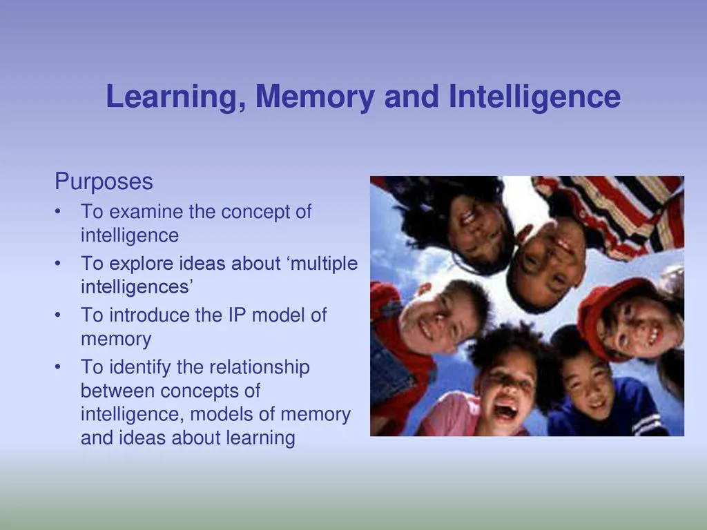
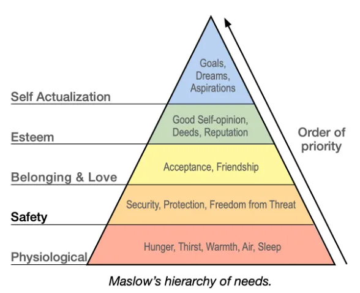

Expanded Nursing Uganda Explanation
Motivation should be reviewed through safe maternal and newborn assessment, early recognition of danger signs, respectful communication and timely referral. Connect the definition to vital signs, bleeding, fetal or newborn wellbeing, patient education and local protocol requirements.
Contents — 15 sections (tap to expand)
01 INNOVATION
This is therefore the way of transforming the resources of an enterprise through creativity of people into new resources and wealth.
The ultimate goal of innovation is positive change, to make someone or something better, innovation and the introduction of it that leads to productivity is a fundamental source of increasing wealth in an economy.
02 CHARACTERISTICS OF INNOVATORS
1. An innovator has a compelling vision : the ability to formulate and articulate a compelling vision for your department or organization is the key characteristic of
your impact as an innovator. e.g Steve Jobs had a compelling vision for Apple to create a personal computer that was easy to use and accessible to everyone.
2. An innovator is opportunity oriented : an innovator always seem to find an
opportunity in any situation, he/she is constantly thinking about new ways of doing
things and is not afraid to try something new. e.g Jeff Bezos saw an opportunity to create an online bookstore that would offer a wider selection of books than any physical bookstore.
3. Are self-disciplined : this means that he or she knows that it takes self discipline to achieve results. One has to do the hard work to make it happen. Innovators are able to prioritize their time so that they are doing the important work. e.g Elon Musk is known for his incredible work ethic and his ability to focus on his goals.
4. Innovators are passionate about he/she believe in : highly successful people have a great passion for what they do. They are usually passionate about one thing and go after it with all their hearts.
5. An innovator is inner–directed: nobody has to tell an innovator what to do. Because of self discipline and ability to focus, innovators get up in the morning and get going, they are goal oriented and do not need anyone else to motivate them.
6. Are extraordinarily persistent : an innovator just keeps going, he does not let obstacles get in the way. It is this commitment and persistence that makes even the hardest goals to be achieved. e.g Thomas Edison failed over 10,000 times before he finally invented the light bulb.
7. An innovator is a trend–spotter : an innovator is able to identify something new and its social responsibility, i.e. its impact to the society.
03 TYPES OF INNOVATION
- Marketing innovation: Developing new markets, new marketing systems, or methods of improvement in terms of product design, packaging, pricing, and promotional activities. Example : Kakira Sugar Limited innovated their packaging by changing from 50kg bags to 25kg bags. Beverage companies like Coca-Cola and Pepsi Cola have also changed their packaging from glass bottles and metallic containers to plastic bottles.
- Process innovation : Implementing a new and significantly improved production and delivery system. May include changing the production layout, the delivery routes, and manufacturing systems. Example : MTN Uganda introduced a new and significantly improved system for sending and receiving money using mobile phones. This innovation has revolutionized the way Ugandans conduct financial transactions, making it easier, faster, and more secure.
- Organizational innovations: Creating or altering business structures, practices, and models. May include process, marketing, and business model innovations. Involves changing the way the organization does things to something better or different in almost all sectors of the organization. Example : Automating a production facility from a manual system, computerizing records registry at a university, or changing accounting systems.
- Product/Service innovation : Introducing new products and services or improving on existing ones. Example : Phone manufacturers have changed phones from Arial phones to wireless, buttoned phones to screen phones, and so on. MTN Uganda introduced a new product of Mobile Money, which was nonexistent in the country before.
- Supply chain innovations: Changing the sourcing of inputs from suppliers and the delivery of outputs to customers. May include changing to better distribution channels, getting more reliable and better suppliers of raw materials, or owning raw material deposits. Example : BIDCO Uganda Limited reduced importing inflammable oil for making cooking oil and changed to buying land and growing their own at Kalangala Island.
04 SOURCES OF INNOVATIONS
The sources of innovation can be grouped into two major categories: internal and external factors.
Internal Sources
- Unexpected occurrences: These include mishaps like a failed product introduction. It is often through such unexpected failures or successes that new ideas are generated or born from new information brought to light. Unexpected occurrences can also take the form of accidents.
- Innovation inspired by process needs : These are innovations created to support other products or processes. For instance, advertising was introduced to mass-produced newspapers to cover the printing expenses on the newly acquired machines.
- Industry and market changes: This often results in the rise and decline of successful innovators. For example, the introduction of mobile money services by MTN on the Ugandan market and in the telecommunication industry has caused many innovations among all the players in the industry and even other sister industries like the insurance and banking industry.
External Forces
- Demographic changes : These affect all aspects of business, for instance, factors like birth rates, death rates, and the proportion of the educated to the uneducated, among others.
- Changes in perception: This leads to innovation. For example, healthcare in Uganda has continuously become better and more accessible. People have increasingly become concerned about their health, thus demanding better health services. This has caused a need for innovations in the medical sector, whereby doctors have been trained more and more, and more tests and drugs have been innovated for particular diagnoses and diseases.
- New knowledge or technology: When new technology emerges, innovative companies earn profits by exploiting it in new applications and markets. For example, the introduction of the internet into business has generated thousands of new service innovations like online chatting, online registration, e-learning platforms, e-commerce, video-conferencing, and many others.
05 ADVANTAGES OF INNOVATION
1. Creativity : Innovative companies generally employ a large number of creative and competent individuals who not only introduce new products but also make sure they are accepted in the market. Such innovative individuals provide ideas on product design, product packaging, implementation, and marketing. This has made such companies stand out from the competition.
2. Market Leadership : Innovative companies are always market leaders. For instance, Riham Cola, which made innovations in the soft drinks industry, has made a greater impact on the market against Pepsi Cola and Coca-Cola companies. Riham introduced the plastic (disposable and non-returnable) packing bottles for soda against the glass bottles of Pepsi and Coca-Cola. This innovation outcompeted the former key players in the industry.
3. Experience : Innovative businesses are also advantaged with experience. They typically get the process of product development down to an exact science that can be repeated over and over again.
5. Expansion of market and sales maximization : Innovation in technology and marketing has seen smaller businesses compete on a global scale. Proprietors using internet marketing have acquired global markets even when they are smaller firms at home but provided they use website advertisements, registered with global marketing sites, among other avenues.
6. Cutting costs : Through innovations like mechanization, automation, and computerization of systems like banking systems and production processes, among others, companies have been able to cut costs relating to labor, late deliveries due to delays in production, and so on.
7. Improving the quality of products/services: Innovation can lead to improvements in the quality of products and services. This can be achieved through the development of new technologies, the use of new materials, or the adoption of new production methods. For example, the development of new medical technologies has led to the development of new drugs and treatments that have saved countless lives.
8. Attracting customers and retaining existing customers: Innovation can help businesses to attract new customers and retain existing customers. This can be achieved by offering new and improved products or services that meet the needs of customers. For example, the development of new smartphones with new features and capabilities has helped Apple to attract and retain customers
9. Giving the business a competitive advantage: Innovation can give businesses a competitive advantage over their competitors. This can be achieved by developing new products or services that are unique or superior to those offered by competitors. For example, the development of the iPod gave Apple a significant competitive advantage in the portable music player market.
06 DISADVANTAGES OF INNOVATION
- Employee concerns and unemployment : While innovation is important, it may arouse employee concerns, especially where many workers are to be laid off due to the automation of production processes. This causes many problems for the affected parties.
- Upfront costs : While innovation saves costs and expenses in the long run, in the short run, it is very costly to implement. For instance, the acquisition and installation of machinery, computers, and all necessary accessories to enable the automation of processes will be more demanding and may cause liquidity problems for the business.
- Rivalry and witchcraft: Innovation can lead to increased competition and rivalry among businesses, as they strive to outdo each other with new and improved products or services. This can sometimes lead to unethical behavior, such as industrial espionage or even witchcraft, as companies try to gain an edge over their competitors.
- Decline in craftsmanship : As businesses adopt new technologies and mass production techniques, there can be a decline in the quality of craftsmanship. This is because machines often cannot replicate the same level of detail and precision as human hands. As a result, traditional crafts and skills can be lost, as they are no longer economically viable.
- Monopoly tendencies : Innovation can lead to the creation of monopolies, as companies that are first to market with a new product or service can gain a significant advantage over their competitors. This can make it difficult for new entrants to break into the market, and can lead to higher prices for consumers.
- Over-exploitation and depletion of resources: Innovation can also lead to the over-exploitation and depletion of natural resources. For example, the development of new technologies for extracting oil and gas has led to increased drilling, which can have negative environmental impacts.
- Cultural and moral degradation : Some innovations can have negative impacts on culture and morality. For example, the development of new technologies for communication and entertainment has led to concerns about the decline of traditional values and the rise of individualism and materialism.
07 Innovation in Small Businesses
Many people think innovation is a formal and complicated process, which only big organizations and businesses can undertake, and yet this is not the case. It is something that all businesses can afford to do since it requires only changing the way things are done normally to switch to something different.
Small businesses are, however, more chanced and more likely to be innovative than larger firms because of the following:
- Most small business owners are willing to try new approaches to make their businesses more successful.
- Small businesses understand customers’ needs, identify new opportunities, and can fix problems more quickly and efficiently.
- Small businesses can quickly implement new business practices and adapt to changing market considerations.
- When pursuing new opportunities, many small business entrepreneurs experiment and improvise. They accept failure as part of the path to success.
- Small businesses traditionally rely on strong local social networks to share information needed for innovative thinking.
- Small businesses are often more flexible than larger firms.
- Small businesses have fewer bureaucratic issues to overcome.
- Small businesses are often closer to their customers and can get feedback more quickly.
- Small businesses are often more willing to take risks.
08 Ways to Foster Innovation in Small Businesses
- Expect change . The rate, complexity, and unpredictability of change are increasing, creating a new hyper-competitive environment.
- Implement new rules . Innovators who go beyond the existing parameters of competition will achieve competitive advantage and success.
- Develop innovative strategies . Develop conscious strategies and mechanisms to promote consistent innovation, as entrepreneurs innovate all the time.
- Avoid barriers. Dissolve internal barriers that separate people and departments. Boundaries between firms, suppliers, customers, and competitors are also under severe pressure.
- Be fast . Implementation needs to be fast. It is better to be 80% right and quick than 10% right and late.
- Think global . The fastest-growing markets may be at the international level. Companies can now shop in a single global supermarket for just about everything.
- Think like an entrepreneur . Entrepreneurs make things happen and allow themselves to fail and improve because of it.
- Always be a faster learner . This is a key to competitive advantage in entrepreneurship: the ability to learn faster and better than competitors and to turn learnings into new products, services, and technologies before competitors can imitate your latest innovation.
- Measure performance indicators . Focus energy on what really drives the future success of the business.
- Do well . By doing well for others, success is easier to attain.
- Create a culture of innovation. Encourage employees to come up with new ideas and take risks.
- Provide resources for innovation . This could include things like training, funding, and access to technology.
- Celebrate successes . When employees come up with successful new ideas, make sure to recognize and reward them.
- Be patient . Innovation takes time. Don’t expect to see results overnight.
09 MOTIVATION
Motivation refers to the process of stimulating someone to adopt a desired course of action usually directed towards achievement of specific goals.
10 WAYS OF MOTIVATING EMPLOYEES
- Timely and adequate remuneration/payment : Employees are more likely to be motivated when they are paid fairly and on time.
- Provision of on-job training and education sponsorship for higher education : Employees appreciate opportunities to learn and grow, and they are more likely to be motivated when they feel that their employer is investing in their future.
- Pleasant or good working conditions: Employees are more likely to be motivated when they work in a safe, comfortable, and supportive environment.
- Providing job security : Employees are more likely to be motivated when they feel that their jobs are secure.
- Promotion prospects : Employees are more likely to be motivated when they have the opportunity to advance in their careers.
- Appraising and appreciating contributions of workers : Employees are more likely to be motivated when they feel that their work is valued and appreciated.
- Participation in decision making : Employees are more likely to be motivated when they feel that they have a say in how their work is done.
- Transparent management : Employees are more likely to be motivated when they trust their managers and feel that they are being treated fairly.
- Open communication: Employees are more likely to be motivated when they feel that they can communicate openly with their managers and coworkers.
- Giving fringe benefits : Employees appreciate fringe benefits such as health insurance, paid time off, and retirement plans.
- Management of discipline : Employees are more likely to be motivated when they feel that discipline is fair and consistent.
11 Importance of Motivation to a Business
- Motivation stimulates workers to perform their duties and the given tasks effectively and efficiently.
- It also improves workers’ productivity and profitability since workers work harder.
- Motivation improves the image of the business or enterprise among the public.
- It also prevents employees from seeking alternative employment opportunities elsewhere.
- It also minimizes employee strikes and demonstrations .
- It enhances teamwork .
- It also improves on worker’s skills through providing training programs like on-job training.
- Motivation in the form of financial or monetary reward improves the worker’s standard of living and increases commitment at work.
12 Nursing Uganda Clinical Lens
Use Motivation as a practical nursing topic, not only a memorized definition. Translate theory into safe decisions, accountability, communication and service improvement.
- What to understand first: define motivation, identify the normal or expected pattern, then explain what changes when the patient is unwell.
- Why it matters in care: the nurse must recognize risk early, explain findings clearly, document accurately and know when to escalate.
- How to revise it: connect each point to assessment, nursing diagnosis or care problem, intervention, rationale and evaluation.
13 Assessment Guide
- The problem, stakeholders, available resources, policy requirements and ethical issues.
- Risks to patients, staff, confidentiality, quality, costs and continuity.
- Documentation, reporting lines, supervision and evaluation measures.
14 Nursing Priorities, Rationales and Outcomes
- Use evidence, policy and professional standards to guide action.
- Communicate clearly, document decisions and protect confidentiality.
- Evaluate whether the action improves safety, learning or service delivery.
The rationale for these priorities is patient safety: nursing actions should prevent deterioration, reduce discomfort, support recovery and create clear evidence for the next caregiver.
- Expected outcome: The plan is documented, realistic, ethical and improves patient care or learning outcomes.
15 Patient Teaching and Revision Check
- Explain motivation in simple language the patient or caregiver can repeat back.
- Teach warning signs, medicine or follow-up instructions, hygiene or lifestyle points where relevant.
- For exams, prepare a short answer using: definition, causes or risk factors, signs, assessment, management, complications and prevention.
- For ward practice, document baseline findings, actions taken, patient response and the plan for review.
Illustrations and Diagrams (2)


Related Video Lectures
Watch nursing lecture videos on YouTube for this topic. Opens in a new tab.
Watch on YouTubeExternal link: YouTube may use its own cookies and terms. Nursing Uganda is not affiliated with YouTube.